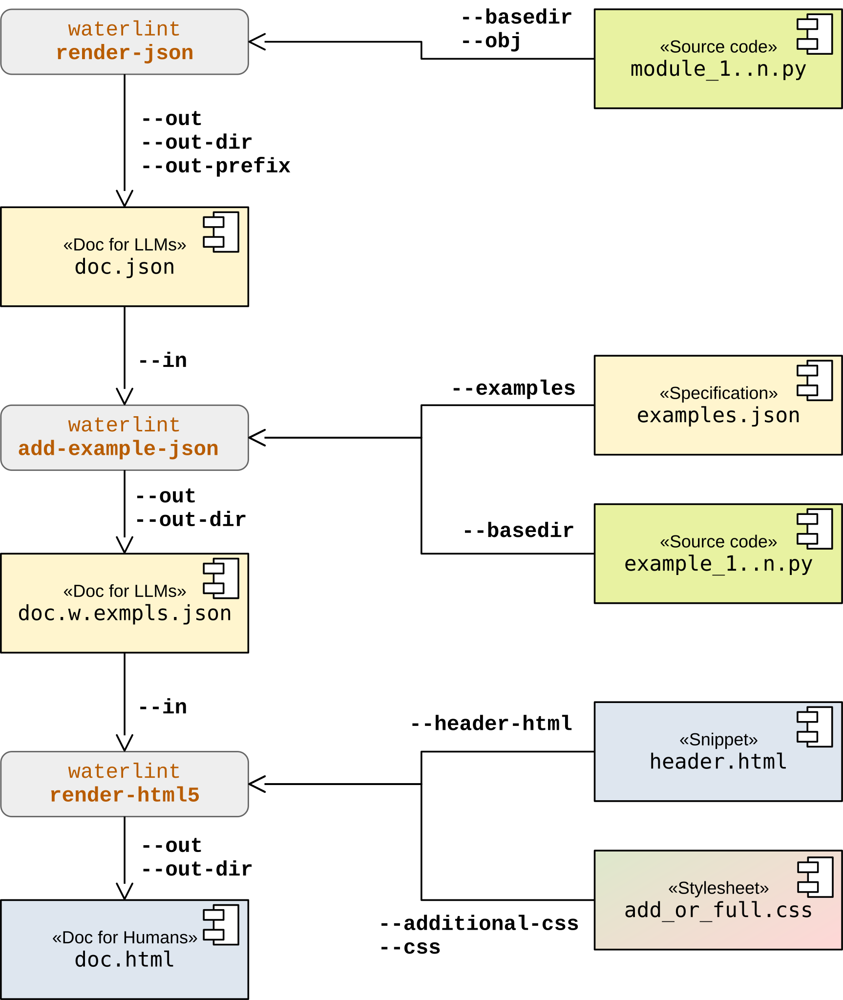

7. Overview: I/O Layers¶
This section is informative.
The following diagram illustrates the typical workflow for generating both LLM-readable and human-readable documentation, including the integration of code examples. It highlights the transformation from source code to structured JSON artifacts and finally to rendered HTML.
The individual stages of this workflow are described in detail in sections The JSON I/O Layer and The HTML Output Layer.
